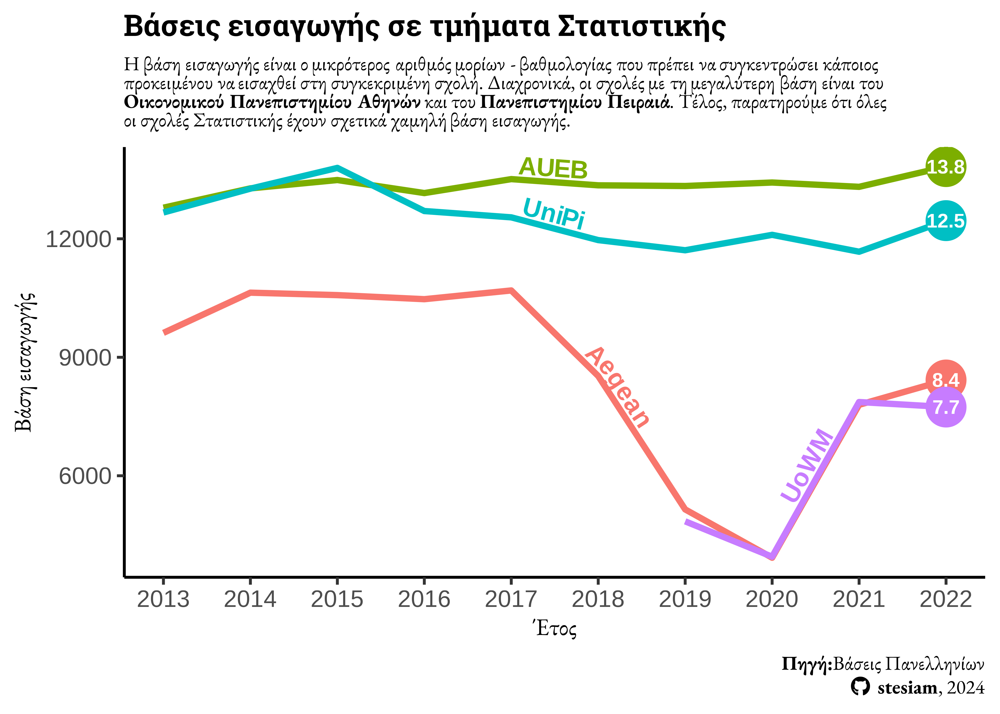
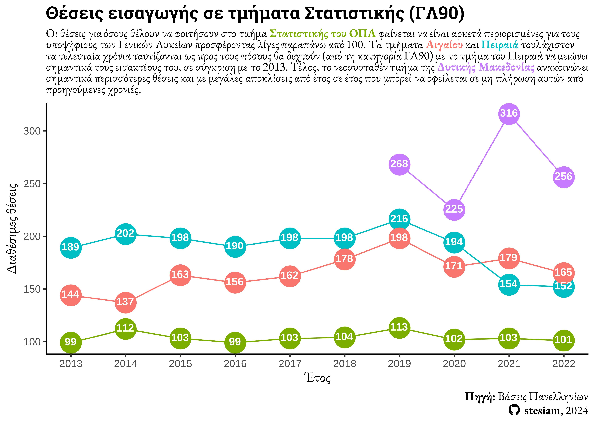
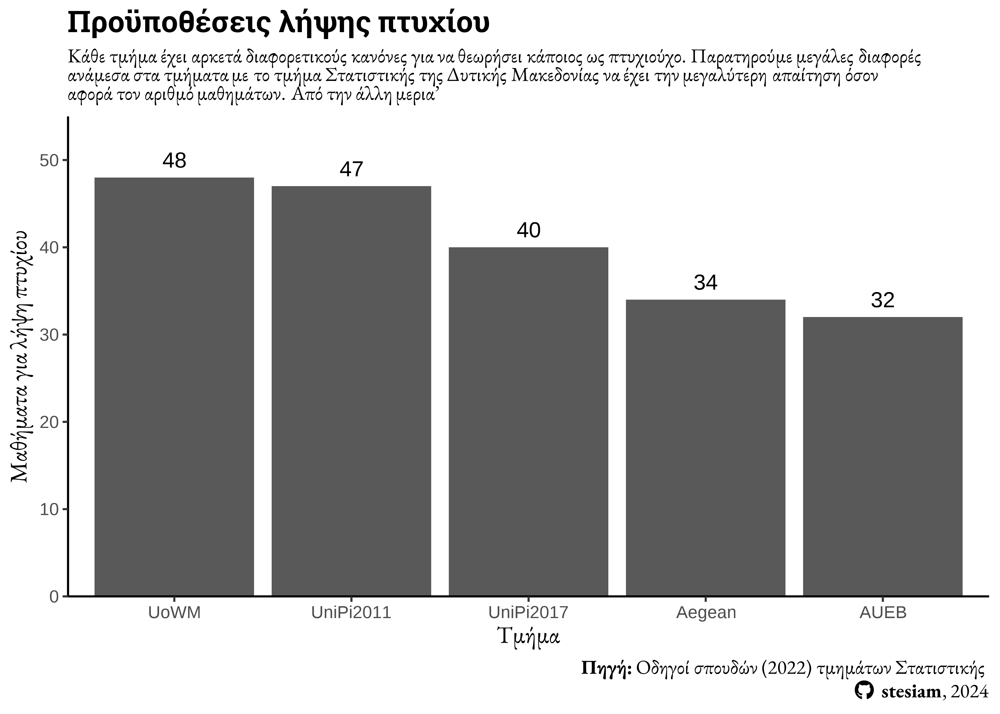
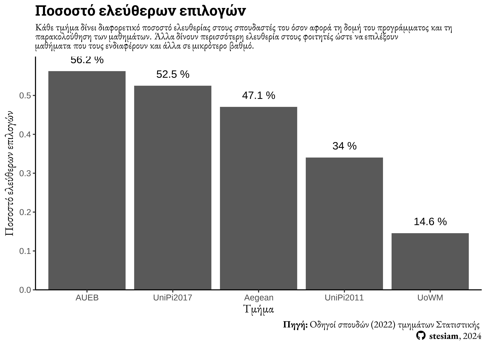

library(dplyr)
library(ggplot2)
library(ggtext)
library(geomtextpath)
library(ggimage)
library(glue)
library(ggrepel)
library(rnaturalearth) # ne_countries
library(rnaturalearthdata) # medium scale option
library(sysfonts)
library(reactable)
library(showtext)
library(reactablefmtr)
font_add_google("Roboto Slab", family = "clim")
font_add_google("EB Garamond", family = "mont")
sysfonts::font_add('fb', '_extensions/quarto-ext/fontawesome/assets/webfonts/fa-brands-400.ttf')
sysfonts::font_add('fs', '_extensions/quarto-ext/fontawesome/assets/webfonts/fa-solid-900.ttf')
showtext_auto()
showtext::showtext_opts(dpi = 300)
library(here)
w = here::here("greek-posts/2023-06-20-Studies-in-Statistics-Greek")Εισαγωγή
Σε αυτό το άρθρο θα ήθελα να συγκεντρώσω όλες αυτές τις διάσπαρτες πληροφορίες που υπάρχουν για τα τμήματα Στατιστικής στη χώρα μας. Θα αναλύσω ως επί το πλείστον πληροφορίες που μπορούν να βρεθούν στο διαδίκτυο σαν να είχα να συμπληρώσω μηχανογραφικό. Ωστόσο, σε κάθε περίπτωση σας αποτρέπω από το να επιλέξετε σχολή βασίζοντας την επιλογή σας σε μόνο αυτό το άρθρο. Σε αυτή τη κατηγορία εντάσσω απλά όσες σχολές σχετίζονται με τη Στατιστική. Τα τμήματα που θα συγκρίνω είναι τα εξής:
- Τμήμα Στατιστικής του Οικονομικού Πανεπιστημίου Αθηνών
- Τμήμα Στατιστικής και Ασφαλιστικής Επιστήμης του Πανεπιστημίου Πειραιά
- Τμήμα Στατιστικής και Αναλογιστικών - Χρηματοοικονομικών Μαθηματικών του Πανεπιστημίου Αιγαίου
- Tμήμα Στατιστικής και Ασφαλιστικής Επιστήμης του Πανεπιστημίου Δυτικής Μακεδονίας
Βάση εισαγωγής
Ένα πρώτο κριτήριο για αρκετούς είναι η βάση εισαγωγής. Αν και κατά τη γνώμη μου αυτός ο δείκτης δείχνει κατά πόσο είναι επιθυμητή αυτή η σχολή και όχι το κατά πόσο καλή ή κακή είναι αυτή. Παρακάτω, συγκέντρωσα ιστορικά στοιχεία βάσεων (από το 2013 μέχρι το 2022) από τις τέσσερις σχολές Στατιστικής και έκανα ένα απλό διάγραμμα. Σε αυτό φαίνεται ότι ιστορικά το τμήμα με τη μεγαλύτερη βάση είναι του ΟΠΑ (με μόνη εξαίρεση το 2015). Δεύτερο σε προτίμηση έρχεται το τμήμα Στατιστικής του Πειραιά. Επιπλέον, τα υπόλοιπα δύο τμήματα Στατιστικής (Αιγαίου και Δυτικής Μακεδονίας) ταυτίζονται αρκετά ως προς τη βάση εισαγωγής τους.
title_text = glue("<b>Βάσεις εισαγωγής σε τμήματα Στατιστικής</b>")
subtitle_text = glue("Η βάση εισαγωγής είναι ο μικρότερος αριθμός μορίων - βαθμολογίας που πρέπει να συγκεντρώσει κάποιος <br> προκειμένου να εισαχθεί στη συγκεκριμένη σχολή. Διαχρονικά, οι σχολές με τη μεγαλύτερη βάση είναι του <br> <b>Οικονομικού Πανεπιστημίου Αθηνών</b> και του <b>Πανεπιστημίου Πειραιά</b>. Τέλος, παρατηρούμε ότι όλες <br> οι σχολές Στατιστικής έχουν σχετικά χαμηλή βάση εισαγωγής.")
caption_text = glue("<b>Πηγή:</b>Βάσεις Πανελληνίων<br><span style='font-family:fb;' ></span> <b>stesiam</b>, 2024")
ggplot2::ggplot(data = tmimata_statistikis, aes(x = Year, y = Vasi,
color= University,
label = University),
group = University) +
geom_point(data = tmimata_statistikis |> dplyr::filter(Year == 2022),
size = 9) +
geom_textline(size = 4.5, vjust = -0.1,
linewidth = 1.5, fontface = "bold", hjust = 0.5) +
geom_text(data = tmimata_statistikis %>% group_by(University) %>% filter(Year == max(Year)), aes(x = Year, y = Vasi, label = round(Vasi/1000, digits = 1)),
fontface = "bold", color = "white", size = 3.5) +
scale_x_continuous("Έτος", breaks = 2013:2023) +
labs(
title = title_text,
subtitle = subtitle_text,
caption = caption_text,
x = "Έτος",
y = "Βάση εισαγωγής",
color = "Πανεπιστήμιο"
) +
theme_classic(base_size = 15) +
theme(
plot.title = element_markdown(family = "clim", size = 15),
plot.subtitle = element_markdown(family = "mont", size = 10, lineheight = 0.7),
plot.caption = element_markdown(family = "mont", size = 10, lineheight = 1.2),
axis.title = element_markdown(family = "mont", size = 12),
legend.position = "none"
)
Θέσεις
Κάθε χρόνο το Υπουργείο Παιδείας ανακοινώνει τις διαθέσιμες θέσεις για κάθε σχολή και για κάθε κατηγορία εξεταζόμενων. Σε αυτή την ανάλυση ασχολούμαι με τους υποψήφιους των Γενικών Λυκείων που αποτελούν και τη συντριπτική πλειοψηφία των συμμετεχόντων. Με μία πρώτη ματιά παρατηρώ μία αντιστροφή των αποτελεσμάτων σε σύγκριση με τη βάση εισαγωγής. Δηλαδή, στις σχολές με την σχετικά υψηλότερη βάση παρέχονται λιγότερες θέσεις, ενώ οι περισσότερες θέσεις διατίθενται στις σχολές χαμηλότερης βάσης.
title_text = glue("<b>Θέσεις εισαγωγής σε τμήματα Στατιστικής (ΓΛ90)</b>")
subtitle_text = glue("Oι θέσεις για όσους θέλουν να φοιτήσουν στο τμήμα **<span style='color:#7cae00;'>Στατιστικής του ΟΠΑ</span>** φαίνεται να είναι αρκετά περιορισμένες για τους <br> υποψήφιους των Γενικών Λυκείων προσφέροντας λίγες παραπάνω από 100. Τα τμήματα **<span style='color:#f8766d;'>Αιγαίου</span>** και **<span style='color:#00bfc4;'>Πειραιά</span>** τουλάχιστον <br> τα τελευταία χρόνια ταυτίζονται ως προς τους πόσους θα δεχτούν (από τη κατηγορία ΓΛ90) με το τμήμα του Πειραιά να μειώνει <br> σημαντικά τους εισακτέους του, σε σύγκριση με το 2013. Τέλος, το νεοσυσταθέν τμήμα της **<span style='color:#c77cff;'>Δυτικής Μακεδονίας</span>** ανακοινώνει <br>σημαντικά περισσότερες θέσεις και με μεγάλες αποκλίσεις από έτος σε έτος που μπορεί να οφείλεται σε μη πλήρωση αυτών από<br> προηγούμενες χρονιές.")
caption_text = glue("<b> Πηγή:</b> Βάσεις Πανελληνίων<br><span style='font-family:fb;' ></span> <b>stesiam</b>, 2024")
ggplot2::ggplot(data = tmimata_statistikis, aes(x = Year, y = Theseis, color= University)) +
geom_line() +
geom_point(size = 8) +
geom_richtext(aes(x = Year, y = Theseis, label = Theseis),
color = "white", size = 3.2, fontface = "bold",
fill = NA, label.color = NA) +
scale_x_continuous("Έτος", breaks = 2013:2022) +
labs(
title = title_text,
subtitle = subtitle_text,
caption = caption_text,
x = "Έτος",
y = "Διαθέσιμες θέσεις",
color = "Πανεπιστήμιο"
) +
theme_classic() +
theme(
plot.title = element_markdown(family = "clim", size = 15),
plot.subtitle = element_markdown(family = "mont", size = 10, lineheight = 0.7),
plot.caption = element_markdown(family = "mont", size = 10, lineheight = 1.2),
axis.title = element_markdown(family = "mont", size = 12),
legend.position = "none"
)
Βέβαια, η παροχή των θέσεων δεν συνεπάγεται πάντοτε και πλήρωση αυτών. Πολλές από αυτές μπορεί να μείνουν αδιάθετες λόγω χαμηλής ζήτησης. Αυτό το φαινόμενο παρατηρείται σε σχολές εκτός των αστικών κέντρων. Τα τελευταία χρόνια υπάρχει και ένας επιπρόσθετος λόγος μιας και έχει θεσμοθετηθεί η ελάχιστη βάση εισαγωγής (ΕΒΕ), η οποία αποτρέπει την βάση μιας σχολής να πέσει κάτω από έναν συγκεκριμένο βαθμό (π.χ. κάτω από 7 ή 13) και για αυτό παρατηρείται στο πρώτο διάγραμμα των βάσεων μία απότομη αύξηση στις σχολές του Αιγαίου και της Δυτικής Μακεδονίας. από την εφαρμογή της να δούμε και άλλες αδιάθετες θέσεις. Έτσι, ο αριθμός των εισακτέων μπορεί πλέον να διαφέρει σημαντικά όχι απλώς μεταξύ τμημάτων εντός και μεγάλων αστικών κέντρων (π.χ. Πανεπιστήμιο Αιγαίου, Πανεπιστήμιο Δυτικής Μακεδονίας - Γρεβενά), αλλά και ως προς τον διαθέσιμο αριθμό εισακτέων και των εγγεγραμμένων φοιτητών.
Προϋποθέσεις για πτυχίο
Και τα τέσσερα τμήματα προσφέρουν 4ετή φοίτηση και κάποιος ορίζεται ως πτυχιούχος με την απόκτηση 240 ECTS. Οι διαφορές τους ανάγονται κυρίως στο πλήθος των μαθημάτων ή στο αν υπάρχει προϋπόθεση για πτυχιακή. Σημειώνεται ότι οι παραπάνω πληροφορίες βασίζονται στους πρόσφατους οδηγούς σπουδών των παραπάνω τμημάτων (2022-2023).
Το UniPi2011 αναφέρεται στο πρόγραμμα σπουδών του τμήματος Στατιστικής του Πειραιά που ίσχυε για τους φοιτητές που μπήκαν στο τμήμα από το 2011 μέχρι το 2016. Οι εισακτέοι του τμήματος από το 2017 ακολουθούν το νέο πρόγραμμα σπουδών του 2017 (UniPI2017)
degree_requirements = data.frame(
"University" = c("AUEB", "UniPi2011", "UniPi2017", "Aegean", "UoWM"),
"Courses" = c(32, 47, 40, 34, 48),
"Comp" = c(14, 31, 19, 18, 41),
"Elective" = c(18, 16, 21, 16, 7),
"Ptixiaki" = c("Yes", "No", "No", "Yes", "No")
)caption_text = glue("<b> Πηγή:</b> Οδηγοί σπουδών (2022) τμημάτων Στατιστικής <br><span style='font-family:fb;' ></span> <b>stesiam</b>, 2024")
ggplot(data = degree_requirements) +
geom_col(aes(x = reorder(University, - Courses), y = Courses)) +
geom_text(aes(x = reorder(University, - Courses), y = Courses + 2 , label = Courses)) +
labs(
title = "<b>Προϋποθέσεις λήψης πτυχίου</b>",
subtitle = "Κάθε τμήμα έχει αρκετά διαφορετικούς κανόνες για να θεωρήσει κάποιος ως πτυχιούχο. Παρατηρούμε μεγάλες διαφορές <br> ανάμεσα στα τμήματα με το τμήμα Στατιστικής της Δυτικής Μακεδονίας να έχει την μεγαλύτερη απαίτηση όσον <br> αφορά τον αριθμό μαθημάτων. Από την άλλη μερια'",
caption = caption_text,
x = "Τμήμα",
y = "Μαθήματα για λήψη πτυχίου"
) +
scale_y_continuous(expand = c(0, 0), limits = c(0, 55)) +
theme_classic() +
theme(
plot.title = element_markdown(family = "clim", size = 15),
plot.subtitle = element_markdown(family = "mont", size = 10, lineheight = 0.7),
plot.caption = element_markdown(family = "mont", size = 10, lineheight = 1.2),
axis.title = element_markdown(family = "mont", size = 12)
)
Επιλεγόμενα μαθήματα
Παραπάνω είδαμε σε πόσα μαθήματα θα πρέπει να εξεταστεί ένας σπουδαστής του αντίστοιχου τμήματος για να πάρει πτυχίο. Πόση ελευθερία υπάρχει σε κάθε τμήμα προκειμένου ο ίδιος ο φοιτητής να προσαρμόσει τις σπουδές του στις προτιμήσεις του και τα προσωπικά του ερευνητικά ενδιαφέροντα; Αυτό προσπάθησα να μελετήσω με την προσθήκη της μεταβλητής των ελεύθερων μαθημάτων και του ποσοστού που αποτελούν αυτά ως προς τα συνολικά μαθήματα.
degree_requirements %>%
mutate(pct = Elective/Courses) %>%
ggplot() +
geom_col(aes(x = reorder(University, - pct), y = pct)) +
geom_text(aes(x = reorder(University, - pct), y = pct + 0.03 , label = paste0(round(pct*100, 1), " %"))) +
labs(
title = "<b>Ποσοστό ελεύθερων επιλογών</b>",
subtitle = "Κάθε τμήμα δίνει διαφορετικό ποσοστό ελευθερίας στους σπουδαστές του όσον αφορά τη δομή του προγράμματος και τη <br> παρακολούθηση των μαθημάτων. Άλλα δίνουν περισσότερη ελευθερία στους φοιτητές ώστε να επιλέξουν <br> μαθήματα που τους ενδιαφέρουν και άλλα σε μικρότερο βαθμό.",
caption = caption_text,
x = "Τμήμα",
y = "Ποσοστό ελεύθερων επιλογών"
) +
scale_y_continuous(expand = c(0, 0), limits = c(0, 0.6)) +
theme_classic() +
theme(
plot.title = element_markdown(family = "clim", size = 15),
plot.subtitle = element_markdown(family = "mont", size = 10, lineheight = 0.7),
plot.caption = element_markdown(family = "mont", size = 10, lineheight = 1.2),
axis.title = element_markdown(family = "mont", size = 12),
)
Άλλες πληροφορίες
others = data.frame(
Uni = c("AUEB", "UniPi2011","UniPi2017", "Aegean", "UoWM"),
Diloseis = c("Ναι", "Όχι", "Όχι", "Όχι", "Όχι"),
Alysides = c("Ναι", "Όχι", "Όχι", "Όχι", "Όχι"),
Ptyxiaki = c("Προαιρετική", "Όχι", "Όχι","Προαιρετική", "Όχι"),
Vathmos = c("Αριθμητικός μέσος", "Σταθμικός μέσος", "Αριθμητικός μέσος", "Σταθμικός μέσος", "Αριθμητικός μέσος")
)reactable::reactable(others,
columns = list(
Uni = colDef(name = "Πανεπιστήμιο"),
Diloseis = colDef(name = "Όριο δηλώσεων",
style = function(value) {
if (value == "Όχι") {
color <- "#008000"
} else {
color <- "#e00000"
}
list(color = color, fontWeight = "bold")
}
),
Alysides = colDef(name = "Αλυσίδες μαθημάτων",
style = function(value) {
if (value == "Όχι") {
color <- "#008000"
} else {
color <- "#e00000"
}
list(color = color, fontWeight = "bold")
}
),
Ptyxiaki = colDef(name = "Πτυχιακή",
style = function(value) {
if (value == "Όχι") {
color <- "#008000"
} else {
color <- "#e8c010"
}
list(color = color, fontWeight = "bold")
}),
Vathmos = colDef(name = "Υπολογισμός βαθμού")
))Χάρτης
Τέλος, θα είχε ενδιαφέρον να εξασκήσω τις ικανότητές μου στη δημιουργία χαρτών με την R. Συνήθως χρησιμοποιώ Shapefiles για να έχω μία βάση (στη προκειμένη περίπτωση τα όρια της Ελλάδας), ωστόσο αυτή τη φορά αποφάσισα να χρησιμοποιήσω το πακέτο rnaturalearth. Αξίζει να σημειωθεί ότι απαιτούνται και τα πακέτα rnaturalearthdata και rnaturalhires.
uni_coord = data.frame(
uni = c("ΠαΠει", "Αιγαίου", "ΟΠΑ", "Δυτικής Μακεδονίας"),
long = c(23.6529793, 26.5664138,23.7300928, 21.4565181),
lat = c(37.77, 39.0851185, 38.1940201, 40.1197471),
img = c("images/UniPi.png", "images/Aegean.png", "images/AUEB.png","images/UoWM.png")
)
grc = ne_countries(country = "greece",
type = "countries",
scale = 'large',
returnclass = "sf")
caption_text = glue("<span style='font-family:fb;' ></span> <b>stesiam</b>, 2024")
ggplot() +
geom_sf(data = grc) +
geom_point(data = uni_coord, aes(x = long, y = lat)) +
# geom_image(data = uni_coord, aes(x = long, y = lat, image = img)) +
geom_image(data = uni_coord, aes(x = long, y = lat, image = img)) +
labs(
title = "<b>Τμήματα Στατιστικής στην Ελλάδα</b>",
subtitle = "Στην Ελλάδα υπάρχουν συνολικά 4 τμήματα Στατιστικής.",
caption = caption_text,
x = "",
y = ""
) +
theme_void() +
theme(
plot.title = element_markdown(family = "clim", size = 15),
plot.subtitle = element_markdown(family = "mont", size = 10, lineheight = 0.7),
plot.caption = element_markdown(family = "mont", size = 10),
axis.title = element_markdown(family = "mont", size = 12),
text = element_text(family = "mont", size = 10)
)Επίλογος
Η προσωπική μου άποψη είναι ότι το τμήμα Στατιστικής του Αιγαίου είναι μία πολύ δελεαστική επιλογή. Παρουσιάζεται (το τονίζω αυτό, παρουσιάζεται) ως ένα σοβαρό τμήμα με έναν σύγχρονο οδηγό σπουδών (λίγα μαθήματα που αντισταθμίζεται με τον ανάλογο φόρτο εργασίας). Το συγκεκριμένο τμήμα κατά τη γνώμη μου αδικείται από τη βάση που έχει. Αν είχα την επιλογή να διαλέξω δίχως να λάβω υπόψιν το οικονομικό κριτήριο (κόστος ενοικίου κτλ.) θα ήταν η πρώτη μου επιλογή. Βέβαια, αυτή η επιλογή όπως έγραψα και στην αρχή βασίζεται αποκλειστικά σε πράγματα που θα έβρισκα στο διαδίκτυο και απλά τα μάζεψα σε ένα άρθρο. Υπάρχουν και άλλα πράγματα που έχουν σημαντικότατο ρόλο, όπως οι διδάσκοντες, το επίπεδο μαθήματος, τήρηση κανονισμών, εγκαταστάσεις, προσβασιμότητα και άλλα που δυστυχώς θα τα μάθετε, όταν θα είναι πολύ αργά.
Αναφορά
BibTeX citation:
@online{2023,
author = {, stesiam},
title = {Σπουδές Στατιστικής στην Ελλάδα},
date = {2023-06-20},
url = {https://www.stesiam.com/greek-posts/2023-06-20-Studies-in-Statistics-Greek/},
langid = {el}
}
Εναλλακτικά, μπορείτε να αναφερθείτε στο παραπάνω άρθρο ως εξής:
stesiam. 2023. “Σπουδές Στατιστικής στην Ελλάδα.” June 20,
2023. https://www.stesiam.com/greek-posts/2023-06-20-Studies-in-Statistics-Greek/.